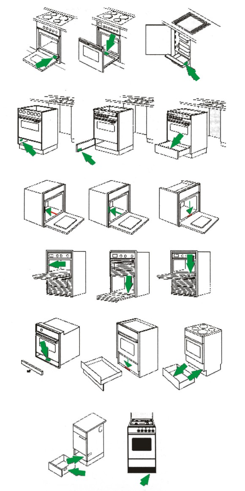

márka-szerviz.hu
márka-szerviz.hu
Szerelőre lenne szüksége háztartási gépéhez?
RÓLUNK
Kedvező árak
Az alkatrészeket tömegével rendeljük és tartjuk raktáron, vagy rövid határidővel beszerezzük.
Bízza a szerelőre!
Több, mint 40 márkához tudunk alkatrészeket rendelni sokféle kis- és nagykészülékhez egyaránt.
Nyomonkövetés
A szerelésről és az alkatrész elérhetőségéről folyamatos tájékozatást adunk.
-
Több, mint 1 000 000 gépet megjavítottunk már 1990 óta
-
Budapesten három átvételi ponttal rendelkezünk, ahova elhozhatja elromlott kis méretű készülékét.
-
A legtöbb házatartási készüket javítjuk, részletes lista a szerviz menüpontban!
-
Tapasztalt kollégáink minden hétköznap 08:00 - 17:00-ig várják hívását!
-
Alkatrész kínálatunkban több tízezer termék található raktáron, illetve több milliót tudunk rendelni!
-
A Beko, Candy és Haier márkák hivatalos országos szervize vagyunk!
Folyamatosan azon dolgozunk, hogy minél jobb szolgáltatást nyújtsunk Önnek!
Szerelőink felkészülten várják a munkákat, több, mint negyven márkához!
-
Ön bejelenti szerviz igényét
-
Mi megkeressük Önt és felmérjük a hibát
-
Lehetőség szerint helyszínen javítunk. Ha mégsem, akkor még aznap megrendeljük Önnek az alkatrészt
-
Megjavítjuk a készülékét
Kis háztartási gépekre vonatkozó szervizleadó pontok:
- 1089 Budapest, Baross u. 127. - csak kisgép
- 1016 Budapest, Hegyalja út 23. - csak kisgép
- 1152 Budapest, Telek utca 13. - kis és nagygép
Az alábbi márkákkal dolgozunk:
Az alábbi beépített vagy szabadonálló készülékeket javítjuk:
A kapcsolatfelvételhez hívjon minket a
+36 1 210 9237-es telefonszámon, írjon emailt, vagy töltse ki gyors online hibajelentő kérdőívünket!
ÁRAK ÉS FELTÉTELEK
A lent feltüntetett árak bruttó összegek. Az árak tartalmazzák a hiba-megállapítást és a munkadíjat; de a kiszállási díjat és alkatrész árát nem.
Az árak 2021. január 01-től érvényesek visszavonásig.
Bevizsgálási és kiszállási díjaink:
A javítási árajánlat elfogadása esetén a hiba megállapítás díja (5000.-Ft) a végszámlából levonásra kerül. A szerelő nagyobb összegű javításnál előleget kérhet az ügyféltől. Amennyiben a javítási árajánlat elutasításra kerül, abban az esetben a kiszállási és hiba megállapítási díjat kell csak kifizetni. Budapesten és Pest megyében 3.990 Ft. a kiszállás.
A hiba megállapítás díja a következőket tartalmazza:
- kiszállás
- szakszerű bevizsgálás
- konkrét, teljes árajánlat
Garancia:
Szerelői munka garanciafizetős cím esetében (csak az elvégzett munkára vonatkozik nem a készülékre):
- 3 hónap 10.000.-Ft alatti javítás esetében
- 6 hónap 10.000 – 20.000.-Ft közötti javítás esetén
- 12 hónap 20.000.-Ft feletti javítás esetén
Páraelszívó készülékek beüzemelése:
Az alap beüzemelési díj tartalmazza:
- a készülék hálózatra történő bekötését (kivezető cső maximum 5 méter távolságig és villamos hálózat maximum 2 méter távolságig)
- kezelő betanítása a készülék használatára
- a garancia elindítása
Az ár nem tartalmazza az esetlegesen szükséges egyéb segédanyagokat (pl.: elvezető cső, vezeték, szénszűrő, stb.). A szerelő csak abban az esetben vállalja a készülék beüzemelést, ha a készülék a falra fel van szerelve, megfelelően van rögzítve, és a csatlakozási pontok megfelelő távolságon belül vannak (kivezető cső maximum 5 méter távolságig és villamos hálózat maximum 2 méter távolságig) illetve, ha az elvezetés a bútoron keresztül már biztosított (ki van vágva a cső helye). A szerelő megtagadhatja a beüzemelést, amennyiben nem találja megfelelőnek a készülék elhelyezését, ebben az esetben a kiszállás és hiba megállapítási díjat kell fizetni.
Gáz- és villany készülékek beüzemelése:
Az alap beüzemelési díj tartalmazza:
- a szerelő felméri, hogy az adott körülmények között a készülék használható-e
- a készülék hálózatra történő bekötését (gáz illetve villany maximum 2 méter távolságig)
- beállítás, beszabályozás
- kezelő betanítása a készülék használatára
- a garancia elindítása
Az ár nem tartalmazza az esetlegesen szükséges egyéb segédanyagokat ( pl.: gáz bekötőcső, csap, vezeték, stb.). A szerelő az első oldható kötésig bonthatja meg a gázrendszert és csak annak elzárt állapotában. A jelenlegi szabványoknak megfelelő saválló gáz bekötő cső 2008.12. óta van forgalomban, ennek (amennyiben az ügyfél rendelkezik bekötőcsővel) és a rendszer egyéb elemeinek ( pl.: csap ) megfelelőségét minden esetben a szerelő a helyszínen bírálja el. Ez azt jelenti, hogy amennyiben nem találja a szabványnak megfelelőnek (vagyon és élet biztonság), megtagadhatja a beüzemelést.
Villany bojler készülékek beüzemelése:
Az alap beüzemelési díj tartalmazza:
- a készülék hálózatra történő bekötését (vízhálózat maximum 50 cm távolságig és villamos hálózat maximum 2 méter távolságig)
- beállítás, beszabályozás
- kezelő betanítása a készülék használatára
- a garancia elindítása
Az ár nem tartalmazza az esetlegesen szükséges egyéb segédanyagokat (pl.: vízbekötő bekötőcső, vezeték, stb.). A szerelő csak abban az esetben vállalja a készülék beüzemelést, ha a készülék a falra fel van szerelve, megfelelően van rögzítve és a csatlakozási pontok megfelelő távolságon belül vannak (vízhálózat maximum 50cm távolságon belül és villamos hálózat maximum 2 méter távolságon belül) A szerelő nem végzi el a beüzemelést, amennyiben nem találja a megfelelőnek a készülék elhelyezését. Ebben az esetben a kiszállási és hiba megállapítási díjat kell fizetni.
| Kiszállási díj | Bruttó ár |
|---|---|
| Budapest területén kiszállás (1-es irányítószámmal kezdődő helyeken) | 3 990 Ft |
| Budapesten kívüli kiszállás (2-es irányítószámmal kezdődő helyeken) | Egyedi ajánlat alapján |
| Megnevezés | Bruttó ár |
|---|---|
| Hiba megállapítás (Bevizsgálás) | 5 000 Ft |
| 1 db készülék beüzemelés (nem gázüzemű készülék esetén) | 7 000 Ft |
| 2 db készülék beüzemelés (nem gázüzemű készülék esetén) | 13 000 Ft |
| 3 db készülék beüzemelés (nem gázüzemű készülék esetén) | 17 000 Ft |
| Gázkészülékek esetén | Bruttó ár |
|---|---|
| 1 db készülék beüzemelés hagyományos álló készülékre (tűzhely, gázfőzőlap) | 11 000 Ft |
| 2 db készülék beüzemelés pl. Főzőlap + sütő (2 külön gép, beépített) | 20 000 Ft |
| 1 db készülék beüzemelés pl. Beko pl.GM15321DX (5 égős gáz főzőlapok) | 13 000 Ft |
| 1 db készülék beüzemelés pl. Candy Trió | 20 000 Ft |
| PB gázra átállás (fúvóka csere) a beüzemelési díjon felül: | 3 500 Ft |
| Régi beépített készülék kiszerelése 1 készülék a beüzemelési díjon felül: | 3 000 Ft |
| Régi beépített készülék kiszerelése (2 készülék) a beüzemelési díjon felül: | 5 000 Ft |
| Mosógép | Bruttó ár |
|---|---|
| Szűrő tisztítás | 6 000 Ft |
| Láb csere | 6 000 Ft |
| Hálózati vezeték, kifolyócső hosszabbítása | 6 000 Ft |
| Tető csere | 6 500 Ft |
| Ajtókapcsoló csere | 11 000 Ft |
| Szivattyú csere | 11 000 Ft |
| Fűtőbetét csere | 11 000 Ft |
| Ajtófül (keret, ajtó, zsanér) csere | 11 000 Ft |
| Érzékelő / szenzor csere | 11 000 Ft |
| Vízszintszabályzó csere | 11 000 Ft |
| Szíj csere | 11 000 Ft |
| Ajtótömítés csere | 11 000 Ft |
| Csapágyazás felültöltős (1 oldal) | 11 000 Ft |
| Csapágyazás felültöltős (2 oldal) | 12 000 Ft |
| Programkapcsoló csere | 12 000 Ft |
| Elektronika csere | 12 000 Ft |
| Belső dugulás elhárítás | 13 000 Ft |
| Főmotor csere | 13 000 Ft |
| Csapágyazás elöltöltős csillagosnál | 15 000 Ft |
| Mosóegység csere | 15 000 Ft |
| Dob csere (felültöltős) | 15 000 Ft |
| Csapágyazás üst megbontásával (műhelybe be és visszaszállítással) | 25 000 Ft |
| Szárítógép | Bruttó ár |
|---|---|
| Érzékelő / szenzor csere | 12 000 Ft |
| Elektronika csere | 12 000 Ft |
| Szíj csere | 16 000 Ft |
| Főmotor csere | 16 000 Ft |
| Hőszivattyú tisztítás (műhelybe be és visszaszállítással) | 29 900 Ft |
| Mosogatógép | Bruttó ár |
|---|---|
| Szórókar csere | 10 000 Ft |
| Szivattyú csere | 11 000 Ft |
| Elektronika csere | 11 000 Ft |
| 3 oldalú tömítés csere | 11 000 Ft |
| Érzékelő / szenzor csere | 11 000 Ft |
| Vízszintszabályzó csere | 11 000 Ft |
| Labirintus csere | 11 000 Ft |
| Zsanér csere | 11 000 Ft |
| Fűtőbetét csere | 13 000 Ft |
| Főmotor csere | 14 000 Ft |
| Aknatömítés csere | 15 000 Ft |
| Só tartály csere | 15 000 Ft |
| Beépített készülék ki-be szerelés | 4 000 Ft |
| Elektromos Főzőlap | Bruttó ár |
|---|---|
| Indukciós készülékjavítás | 12 000 Ft |
| Hagyományos főzőzóna csere | 12 000 Ft |
| Kerámia főzőzóna csere | 12 000 Ft |
| Kerámialap csere | 12 000 Ft |
| Elektronika csere | 12 000 Ft |
| Tűzhely | Bruttó ár |
|---|---|
| Gázbekötő cső csere | 7 000 Ft |
| Hagyományos főzőlap csere | 10 000 Ft |
| Sütő fűtőbetét csere | 10 000 Ft |
| Zsanércsere | 10 000 Ft |
| Külső-üveg csere | 10 000 Ft |
| Kerámia főzőlap csere | 11 000 Ft |
| Kerámialap csere | 11 000 Ft |
| Főzőlap termoelem csere | 11 000 Ft |
| Hőfokszabályzó csere | 11 000 Ft |
| Funkcióválasztó kapcsoló csere | 11 000 Ft |
| Elektronika csere | 11 000 Ft |
| Sütő termoelem csere | 12 000 Ft |
| Sütő kamra csere | 25 000 Ft |
| Beépített készülék ki-be szerelés | 4 000 Ft |
| Hűtőgép | Bruttó ár |
|---|---|
| Hőfokszabályzó csere | 10 000 Ft |
| Elektronika csere | 10 000 Ft |
| Ajtógumi csere | 10 000 Ft |
| Érzékelő / szenzor csere | 10 000 Ft |
| Ajtó megfordítás | 12 000 Ft |
| Ajtó csere | 12 000 Ft |
| Ajtócsere (ajtóba elektronika van) | 12 000 Ft |
| Ajtó megfordítás (ajtóban elektronika van) | 14 000 Ft |
| Gáztöltés /anyaggal R600a/ | 20 000 Ft |
| Kompresszor csere /gáztöltet R600a/ | 21 000 Ft |
| Elpárologtató csere /gáztöltet R600a/ | 24 000 Ft |
| Beépített készülék ki-be szerelése | 4 000 Ft |
| Side by Side (SBS) hűtőgép | Bruttó ár |
|---|---|
| Hőfokszabályzó csere | 12 500 Ft |
| Elektronika csere | 12 500 Ft |
| Ajtó csere | 12 500 Ft |
| Ajtógumi csere | 12 500 Ft |
| Érzékelő / szenzor csere | 12 500 Ft |
| Gáztöltés /anyaggal R600a/ | 22 000 Ft |
| Kompresszor csere /gáztöltet R600a/ | 23 000 Ft |
| Elpárologtató csere /gáztöltet R600a/ | 26 000 Ft |
| Elektromos bojler | Bruttó ár |
|---|---|
| Hőfokszabályzó / szenzor csere | 10 000 Ft |
| Elektronika csere | 10 000 Ft |
| Hő korlátozó csere | 10 000 Ft |
| Nyomáscsökkentő csere | 14 000 Ft |
| Biztonsági szelep csere | 14 000 Ft |
| Vízkőtelenítés | 14 000 Ft |
| Fűtőszál csere | 14 000 Ft |
| Anód csere | 14 000 Ft |
| Záró fedél csere | 14 000 Ft |
| Tömítés csere | 14 000 Ft |
| Páraelszívó (hagyományos vagy kürtős) | 10 000 Ft |
|---|---|
| Sziget páraelszívó (mennyezetre szerelt) | 13 000 Ft |
| Mikrohullámú sütő | Bruttó ár |
|---|---|
| Csillámlap csere | 6 000 Ft |
| Biztosíték csere | 8 000 Ft |
| Egyéb javítás | 11 000 Ft |
| Egyéb díjak | Bruttó ár |
|---|---|
| Kölcsön készülék biztosítása a javítás időtartama alatt (maximum 30 nap) | 12 000 Ft |
| Műhelyi bevizsgálás beszállítással és visszaszállítással | 13 500 Ft |
| Készülékszállítás | 5 000 Ft |
| Készülék ki-be szállítás | 9 000 Ft |
| Ügyfél által behozott gép bevizsgálása kisgép (bármely boltban leadható) LEADÁSKOR FIZETENDŐ | 2 500 Ft |
| Ügyfél által behozott gép bevizsgálása nagygép leadás csak Telek utca LEADÁSKOR FIZETENDŐ | 5 000 Ft |
Jelentse be online az elromlott, vagy beüzemelendő készülékét!
Töltse ki a lenti kérdőívünket, körülbelül öt perc alatt! Ezzel megspórolja a várakozást, és telefonos költségét is!
Rövid időn belül felhívjuk és árajánlatot teszünk!
Súgó
Márkánként és készülékenként eltérhet, hogy a gyártó hova rögzíti a készülék azonosítóit tartalmazó adattáblát. Ehhez próbálunk most egy kis iránymutatást adni, hogy gyorsabban menjen a szolgáltatás.
Porszívó
A porszívók esetében az adattáblát a következő helyeken találhatja meg: A készülék alján, hátulján!

Mosógép
A mosógépek esetében az adattáblát a következő helyeken találhatja meg: Elöltöltős mosógépek esetében: Az ajtó belső keretén,alul a szűrőajtón, vagy az alsó burkolati elem mögött! Felültöltős mosógépek esetében: A fedél élén, az alsó burkolati elem mögött, vagy a gép hátulján!

Főzőlap
A főzőlapok esetében az adattáblát a következő helyeken találhatja meg: A főzőlap elején alul, vagy a hátulján az élén!
Mikrohullámú sütő
A mikrohullámú sütők esetében az adattáblát a következő helyeken találhatja meg: Az ajtó élén, a keret élén, vagy a hátulján!
Tűzhely
A tűzhelyek esetében az adattáblát a következő helyeken találhatja meg: Az ajtó alján, a fedő/tepsi tároló oldalán, az ajtó kereten,
Hűtőgép
A hűtők esetében az adattáblát a következő helyeken találhatja meg: Az zöldségtárolót kihúzva a hűtő oldalfalán!

Mosogatógép
A mosogatógépek esetében az adattáblát a következő helyeken találhatja meg: A ajtó élén, a gép hátulján, vagy a kereten!

A különböző márkák eltérő azonosító neveket használnak. A legjobb mindig, ha Ön egy adattábla fotót küldd nekünk, de az alábbi táblázat segíthet!
| Márka | Modell | Termék azonosító | Sorozatszám |
|---|---|---|---|
| AEG | Modell | PNC (9-cel kezdődő 9 jegyű számsor + 2 jegyű verziószám) | Szériaszám (8 jegyű számsor) |
| Amica | Modell és termékkód | 14 jegyű számsor (sorozatszám) | |
| Ardo | Modell és típus | 22 jegyű számsor (gyártási évvel kezdődő) | |
| Ariston | Modell | 11 számjegyű ipari kód | S/N szám (9 számjegyű) |
| Ariston bojler ( Bluker , Junior , Perla ,Regent , Superlux ) | Modell | 11 számjegyű ipari kód | S/N szám (9 számjegyű) |
| Bauknecht | Modell és típus | Szervizszám (85-tel kezdődő, 12 számjegy) | |
| Beko | Típus | 10 jegyű kód | |
| Bosch | Típus | E-nr | FD szám |
| Braun | Típus | 4 jegyű számsor /"OC"-vel kezdődő számsor ha van | |
| Candy | Modell | Fantázianév | Gyári szám |
| Cata | Típus | 8 jegyű azonosító | |
| Constructa | E-nr | FD szám | |
| De-Lonhghi | Típus | ||
| Dirt Devil | Típus | ||
| Dometic | Modell | PNC (9-cel kezdődő 9 jegyű számsor + 2 jegyű verziószám) | Széria ha van! |
| Dyson | Modell | ||
| Electrolux | Modell | PNC (9-cel kezdődő 9 jegyű számsor) | Szériaszám (9 jegyű számsor) |
| Elektra Bregenz | Típus | 10 jegyű számsor | |
| Eta | Modell és típus | min. 3 v. 4 számjegy | |
| Fagor | Modell | PNC (9-cel kezdődő 9 jegyű számsor) | Gyári szám (8 jegyű számsor) |
| Gaggenau | E-nr | FD szám | |
| Gaggia | Modell | ||
| Gorenje | Modell és típus | ART szám (6 számjegyű számsor) | Szériaszám (8 jegyű számsor) |
| Haier | Típus | 11 számjegyű számsor | |
| Hajdu | Típus | ||
| Hajdu Zerowatt | Típus | 3-assal kezdődő 8 jegyű számsor | |
| Hoover | Típus | 3-assal kezdődő 8 jegyű számsor | |
| Iberna | Típus | 3-assal kezdődő 16 jegyű számsor | |
| Ignis | Modell és típus | Szervizszám (85-tel kezdődő, 12 számjegy) | |
| Indesit | Modell | Ipari kód (11 számjegyű számsor) | S/N szám (9 számjegyű) |
| Karancs | Típus | ||
| Kenwood | Típus | ||
| Komfort | Típus | ||
| Krups | REF.N szám | ||
| LG | Modell | ||
| Liebherr | Típus | ||
| Mora | Modell és típus | régi: TÍPUS (pl.: 1401.xxxx)/ új: ART | Szériaszám |
| Moulinex | Modell és típus | REF.N.szám | |
| Neff | E-nr | FD szám | |
| Panasonic | Típus | ||
| Pelgrim | Típus | ||
| Philips | Típus | ||
| Polar | Modell és típus | Szervizszám (85-tel kezdődő, 12 számjegy) | |
| Privileg | Amilyen adat van! Lehet 85-ös, PNC...stb | ||
| Progress | Modell | PNC (9-cel kezdődő 9 jegyű számsor + 2 jegyű verziószám), | Szériaszám, ha van! |
| Rowenta | Típus | ||
| Samsung | Modell | M/C szám (ált. "/" jeles) | |
| Seppelfricke | Típus | ||
| Siemens | E-nr | FD szám | |
| Smeg | Típus | ||
| Stiebel Eltron | Típus | ||
| Szarvasi | Típus | ||
| Techwood | Típus | ||
| Tefal | REF.N szám | ||
| Teka | Típus | REF.N szám | |
| Thomas | Fantázianév | ||
| Ufesa | E-nr | FD szám | |
| Vesta | Típus | ||
| Whirlpool | Modell és típus | Szervizszám (85-tel kezdődő, 12 számjegy) | |
| Zanussi | Modell | PNC (9-cel kezdődő 9 jegyű számsor + 2 jegyű verziószám) | Szériaszám, ha van! |
| Zelmer | Típus | ||
| Zerowatt | Típus | 3-assal kezdődő 8 jegyű számsor |
ÁLTALÁNOS SZERZŐDÉSI FELTÉTELEK (ÁSZF)
1. A Szolgáltató
2. A Megrendelő
A munkalapon feltüntetett személy.
3. A Szolgáltatás
A Megrendelő által Szolgáltatónak átadott háztartási kisgép és nagygép (továbbiakban: készülék) meghibásodásának javítása díj ellenében.
4. Az ÁSZF tartalma
Jelen ÁSZF tartalmazza a Szolgáltatással és annak igénybevételével kapcsolatos általános feltételeket, így Szolgáltató és Megrendelő jogait, kötelezettségeit, valamint egyéb, a Szolgáltatással összefüggő lényeges körülményeket. Jelen ÁSZF elválaszthatatlan részét képezi az egyedi megrendelésnek, így kizárólag az egyedi megrendeléssel együtt alkalmas joghatás kiváltására. Az egyedi megrendelésben és a jelen ÁSZF-ben nem szabályozott kérdésekben a mindenkor hatályos magyar jogszabályok és hatósági előírások, illetve a hatályos Polgári Törvénykönyvbe foglalt rendelkezések külön kikötés nélkül is irányadóak.
5. A Szolgáltatás igénybe vétele
Megrendelő a javítani kért készüléket munkalap felvétele mellett adja át Szolgáltatónak. Megrendelő a munkalapon feltünteti nevét és elérhetőségeit, a készülék azonosítását szolgáló adatokat, valamint megjelöli a készülék általa észlelt hibáját. Felek a munkalapon tüntetik fel a javítás várható időtartamát. Amennyiben Szolgáltató a javításra vonatkozó megrendelést elvállalja, úgy a készüléket átveszi és a munkalap egy Felek által aláírt példányát Megrendelőnek visszaadja. Felek között a javítási szerződés jelen ÁSZF elfogadásával, a munkalap aláírásával és a készülék átadásával jön létre.
6. Jogszavatossági nyilatkozat
Megrendelő jelen ÁSZF aláírásával kijelenti, hogy a Szolgáltatónak átadott készülék tekintetében rendelkezési és használati joga áll fenn; kijelenti továbbá, hogy harmadik személynek nincs olyan joga, amely a készülék Szolgáltató általi javítását akadályozná vagy korlátozná. Megrendelő szavatolja, hogy a készülék felett jogszerűen szerzett rendelkezési és használati jogot.
7. A készülék javítás
Szolgáltató az átvett készüléket a munkalapon jelzett hiba feltárása érdekében bevizsgálja. Megrendelő a kiszállás és a bevizsgálás díját abban az esetben is köteles megfizetni, ha a javításra végül nem kerül sor. Amennyiben a bevizsgálás eredményeként kiderül, hogy a jelzett hiba javítása bonyolultabb vagy költségesebb, mint ahogy az előzetesen várható volt, úgy Szolgáltató magasabb javítási díjra tarthat igényt. A javítás különösen akkor tekinthető bonyolultabbnak vagy költségesebbnek, ha a valódi hiba jelentősebb a jelzett hibánál, vagy ha a jelzett hibával összefüggő más hibák is feltárásra kerülnek. Szolgáltató a magasabb javítási díj iránti igényét a bevizsgálást követő 5 (öt) napon belül köteles Megrendelőnek bejelenteni. Amennyiben Megrendelő a magasabb javítási díjat nem fogadja el, úgy a szerződést bármelyik Fél azonnali hatállyal felmondhatja. A készülék javítását Szolgáltató a magasabb javítási díjban való megállapodást megelőzően csak saját kockázatára folytathatja. Amennyiben a bevizsgálás eredményeként Szolgáltató megállapítja, hogy a hiba nem javítható, vagy olyan ok merül fel, amely miatt a javítást megtagadhatja, jogosult a szerződéstől azonnali hatállyal elállni.
8. A szavatossági és kárfelelősség kizárása
Szolgáltatót az általa végzett javításért a Ptk. szerinti szavatosság terheli. A szavatossági jog érvényesítésére vonatkozó szabályokat a Ptk. 395. (4) bekezdése, valamint a 305. § – 311/A. § szakaszai tartalmazzák. Szolgáltató kizárja szavatossági vagy kárfelelősségét az alábbi esetekben:
9. Alkatrész garancia
Az alkatrészekre vonatkozó garancia, illetve szavatossági idő kizárólag abban az esetben érvényes, ha szakember által kerül beszerelésre!
10. A javítás időtartama
Szolgáltató a munkalapon megjelöli a készülék javításának várható időtartamát. Amennyiben a készülék javítása befejeződött és a készülék átvehető, úgy arról Szolgáltató telefonon/elektronikus levél útján értesíti a Megrendelőt. Amennyiben a javítás időtartama a munkalapon jelzett időtartamot meghaladja, úgy erről Szolgáltató köteles Megrendelőt a vállalt javítási határidő leteltét megelőző három nappal értesíteni.
11. A készülék kiadása
Megrendelő az átvételéről való értesítést követő 30 (harminc) naptári napon belül köteles a készüléket Szolgáltatótól átvenni. Amennyiben Megrendelő a készüléket a fenti határidőn belül nem veszi át, Szolgáltató jogosult nettó 300,-Ft/nap tárolási díjat felszámítani. Szolgáltatót a készülék tekintetében követeléseinek biztosítása céljából kézizálogjog illeti meg. Amennyiben az átvételről való értesítést követő 60 (hatvan) naptári napon belül Megrendelő a készüléket nem veszi át, úgy Szolgáltató jogosult a Megrendelővel szembeni követeléseit a zálogtárgyból kielégíteni. A gépet ellenszolgáltatás nélkül megsemmisítheti. Szolgáltató a készüléket csak a munkalap bemutatása és átvételi igazolás kiállítása mellett adja ki Megrendelőnek. Megrendelő személyazonosságát Szolgáltató felhívására igazolni köteles. Szolgáltató a Megrendelő példányát képező munkalappal való visszaélés esetén az ebből eredő károkért nem vállal felelősséget.
12. A díjfizetés
Megrendelő a kiszállás és a bevizsgálási díját a bevizsgáláskor fizeti ki a javítási díjat legkésőbb a készülék részére történő kiadásával egyidejűleg köteles Szolgáltatónak készpénzben megfizetni. Szolgáltató a díjfizetésig jogosult a készüléket visszatartani. Figyelem! Amennyiben a készülék nem higiénikus (szennyezett, koszos) bruttó 2000 Ft tisztítási díjat számítunk fel. Szolgáltatót a Ptk. 397. § (2) alapján a szerződéssel kapcsolatos követelései biztosítására kézizálogjog illeti meg Megrendelőnek azon vagyontárgyain, amelyek a javítási szerződés következtében kerültek birtokába.
13. Értesítések
Szolgáltató a Megrendelő részére szóló értesítéseket Megrendelő munkalapon feltüntetett elérhetőségére küldi meg. Az sms és e-mail üzenet útján közölt értesítések a feladást követő napon tekintendők kézbesítettnek. A Megrendelőnél keletkező technikai hibák az értesítés kézbesített jellegét nem befolyásolják. Megrendelő nem hivatkozhat elérhetőségei megváltozására, ha a változásról Szolgáltatót nem tájékoztatta. Amennyiben harmadik személy visszaél Megrendelő elérhetőségével, úgy az ebből eredő károkért Szolgáltató nem vállal felelősséget.
14. A szerződés ideje
A javítási szerződés határozatlan időre jön létre, a szerződés annak teljesítésével szűnik meg. Felek a jelen ÁSZF-ben foglalt esetekben gyakorolhatják elállási, illetve felmondási jogukat. Megrendelő a szerződéstől bármikor elállhat, köteles azonban Szolgáltató addig felmerült díját és esetleg felmerülő kárát megtéríteni.
15. Adatkezelési, adatvédelmi szabályozás
Megrendelő hozzájárul ahhoz, hogy a munkalapon megadott személyes adatait Szolgáltató saját rendszerében kezelje és tárolja, valamint a javítási szerződés teljesítése során felhasználja. Szolgáltató vállalja, hogy Megrendelő adatait biztonságosan kezeli, azokat harmadik személy részére nem adja ki.ADATVÉDELMI NYILATKOZAT
Amikor kedves vásárlóink meglátogatják weblapunkat, magánszférájuk és személyiségi jogaik védelme rendkívül fontosak számunkra. Ezt a szempontot nem hagyhatjuk figyelmen kívül, amikor szeretnénk Önt rendszeresen és bizalmasan tájékoztatni ajánlatainkról. Amikor Ön meglátogatja a www.marka-szerviz.hu honlapot, személyes adatok kezelésére, feldolgozására és felhasználására kerülhet sor. Az adatvédelemről szóló jelen tájékoztatóval szeretnénk hangsúlyozni elkötelezettségünket az iránt, hogy az Ön adatait biztonságos és megbízható módon kezeljük, és fontosnak tartjuk ismertetni azt a folyamatot, ahogyan vásárlóink személyes adatait kezeljük. Az alábbi Adatvédelmi szabályzat célja tájékoztatás nyújtása az Ön részére arról, hogy hogyan használjuk a személyes adatait, amellyel kapcsolatosan megfelelünk az információs önrendelkezési jogról és az információszabadságról szóló 2011. évi CXII. törvény (a továbbiakban: Infotv.) és az Általános Adatvédelmi Rendelet (GDPR) szigorú követelményeinek. A Szabó Família Kft. adatkezelési alapelvei összhangban vannak az adatvédelemmel kapcsolatos hatályos jogszabályokkal, így különösen az alábbiakkal:
Személyes adatokkal kapcsolatos fogalmak
személyes adat
bármely meghatározott (azonosított vagy azonosítható) természetes személlyel (a továbbiakban: érintett) kapcsolatba hozható adat, az adatból levonható, az érintettre vonatkozó következtetés. A személyes adat az adatkezelés során mindaddig megőrzi e minőségét, amíg kapcsolata az érintettel helyreállítható. A személy különösen akkor tekinthető azonosíthatónak, ha őt – közvetlenül vagy közvetve – név, azonosító jel, illetőleg egy vagy több, fizikai, fiziológiai, mentális, gazdasági, kulturális vagy szociális azonosságára jellemző tényező alapján azonosítani lehet;
különleges adat
a faji eredetre, a nemzeti és etnikai kisebbséghez tartozásra, a politikai véleményre vagy pártállásra, a vallásos vagy más világnézeti meggyőződésre, az érdekképviseleti szervezeti tagságra, az egészségi állapotra, a kóros szenvedélyre, a szexuális életre vonatkozó adat, valamint a bűnügyi személyes adatok;
adatkezelés
az alkalmazott eljárástól függetlenül az adatokon végzett bármely művelet vagy a műveletek összessége, így például gyűjtése, felvétele, rögzítése, rendszerezése, tárolása, megváltoztatása, felhasználása, továbbítása, nyilvánosságra hozatala, összehangolása vagy összekapcsolása, zárolása, törlése és megsemmisítése, valamint az adatok további felhasználásának megakadályozása. Adatkezelésnek számít a fénykép-, hang- vagy képfelvétel készítése, valamint a személy azonosítására alkalmas fizikai jellemzők (pl. ujj- vagy tenyérnyomat, DNS-minta, íriszkép) rögzítése is;
adatfeldolgozás
az adatkezelési műveletek, technikai feladatok elvégzése, függetlenül a műveletek végrehajtásához alkalmazott módszertől és eszköztől, valamint az alkalmazás helyétől.
adattovábbítás
valamely adat hozzáférhetővé tétele meghatározott harmadik személy számára;
nyilvánosságra hozatal
valamely adat hozzáférhetővé tétele bárki számára;
adatkezelő
az a természetes vagy jogi személy, illetve jogi személyiséggel nem rendelkező szervezet, aki vagy amely az adatok kezelésének célját meghatározza, az adatkezelésre (beleértve a felhasznált eszközt) vonatkozó döntéseket meghozza és végrehajtja, vagy az általa megbízott adatfeldolgozóval végrehajtatja; Kötelező adatkezelés esetén az adatkezelés célját és feltételeit, valamint az adatkezelőt az adatkezelést elrendelő törvény vagy önkormányzati rendelet határozza meg;
adatfeldolgozó
az a természetes vagy jogi személy, illetve jogi személyiséggel nem rendelkező szervezet, aki vagy amely az adatkezelő megbízásából személyes adatok feldolgozását végzi;
adattörlés
az adatok felismerhetetlenné tétele oly módon, hogy a helyreállításuk nem lehetséges
Adatkezelés
Adatkezelő
Az Info tv. rendelkezéseiből eredően az adatkezelő, a
Az Adatkezelő részéről az adatokhoz az Adatkezelő munkavállalói férnek hozzá abban a körben, amely munkájuk elvégzéséhez feltétlenül szükséges. A személyes adataihoz való hozzáférési jogosultságokat szigorú belső szabályzatban rögzítjük.
Ki az Adatkezelő adatvédelmi felelőse és mik az elérhetőségei?
Az Adatkezelőnél nem került sor adatvédelmi tisztviselő kinevezésére a GDPR rendelet előírásainak értelmében. Adatkezeléssel kapcsolatosan a adatkezeles@orczy.com e-mail címre vagy a 1152 Budapest, Telek u. 13. posta címre írhat.
Adatfeldolgozók
A kapcsolattartói adatok kezeléséhez, tárolásához különböző vállalkozásokat veszünk igénybe, akikkel adatfeldolgozói szerződést kötöttünk.
Mik a személyes adatok?
A személyes adat az érintettel kapcsolatba hozható adat, valamint az adatból levonható, az érintettre vonatkozó következtetés. A regisztrált felhasználó nevén, címén, telefonszámán, e-mail címén és adó azonosító jelén túlmenően weblapunkon tett minden látogatás alatt további adatok automatikus gyűjtésére is sor kerül technikai okokból. Ez a technikai anyag némely esetben személyes adatokat képezhet. Általános szabályként azonban mi ezeket a technikai adatokat csupán olyan mértékben használjuk fel, amennyire technikai szempontból weboldalunk működése és védelme érdekében szükséges a támadásokkal és visszaélésekkel szemben, ezen túlmenően pszeudonimizált (álnevesített) vagy anonimizált (nem nevesített) formában statisztikai célokra.
Hogyan használjuk az Ön személyes adatait?
Személyes adatot kizárólag meghatározott célból, jog gyakorlása és kötelezettség teljesítése érdekében lehet kezelni. Csak olyan személyes adat kezelhető, amely az adatkezelés céljának megvalósulásához elengedhetetlenül szükséges, a cél elérésére alkalmas. Személyes adat csak a cél megvalósulásához szükséges mértékben és ideig kezelhető. Személyes adat kizárólag akkor kezelhető, amennyiben ahhoz az érintett hozzájárul, azt törvény vagy – törvény felhatalmazása alapján az abban meghatározott körben – helyi önkormányzat rendelete közérdeken alapuló célból elrendeli.
Naplófájlok
Az adatokat technikai elővigyázatosságból legfeljebb 7 napig tároljuk a jogosulatlan belépésekkel szemben adatfeldolgozó rendszerünk védelmében. Álnevesített (pszeudonimizált) használói profilok a jogi rendelkezések keretein belül azért, hogy szolgáltatásainkat egyre jobban vásárlóink igényeihez és elvárásaihoz igazítsuk, anonim módon statisztikát készítünk a felhasználói profilok alapján és kiértékeljük ezeket. A süti egy világos betű/szám kombinációt tartalmaz, amely az Ön által használt böngészőt azonosítja. Ezek a sütik csak ideiglenesen tárolódnak a számítógépén, és csak akkor kerülnek át a szerverünkre, amikor Ön meglátogatja honlapunkat. Főleg egyszeri tevékenységre szolgáló sütiket alkalmazunk, amelyek nem az Ön merevlemezén tárolódnak és nyomban kitörlődnek, amikor a böngészőjét bezárja vagy ha meghatározott ideig semmit nem csinál a honlapon. Megtekintheti és kitörölheti a számítógépén tárolt sütiket, és ellenőrzése alatt tarthatja azok használatának módját web böngészőjének beállításai segítségével. Erről további információkat kaphat a gyártótól vagy web böngészőjének súgóján keresztül. Kérjük, vegye figyelembe, hogy a marka-szerviz.hu funkciói csak korlátozottan érvényesülnek, illetve nem elérhetők, ha Ön letiltja a sütik használatát.
Google Analytics használata
A weboldal a Google Analytics-et, a Google Inc. („Google“) webelemző szolgáltatását alkalmazza. A Google Analytics ún. „sütiket“, az Ön számítógépén tárolt szöveges fájlokat alkalmaz, amelyek lehetővé teszik az Ön weboldal-látogatásainak elemzését. A süti által az Ön weboldal-látogatásáról létrehozott információkat a rendszer általában a Google egyesült államokbeli szerverére küldi, és ott tárolja. A Google lerövidíti az Ön IP-címét, de csak az Európai Unió tagállamaiban vagy az Európai Gazdasági Térségről szóló megállapodás egyéb országaiban. Csak kivételes esetekben fordul elő, hogy a rendszer a teljes IP-címet a Google egyesült államokbeli szerverére küldi, és ott rövidíti le. A weboldal üzemeltetőjének megbízásából a Google ezeket az információkat fogja felhasználni ahhoz, hogy kiértékelje az Ön weboldal-használatát, és jelentéseket állítson össze a weboldalon végrehajtott tevékenységekről, valamint további, a weboldal és az internet használatával kapcsolatos szolgáltatásokat ajánljon fel a weboldal üzemeltetőjének. A böngészője által továbbított IP-címet a Google nem kapcsolja össze egyéb Google-adatokkal. A sütik használatát böngészőszoftverének megfelelő beállításával letilthatja.
A Google általi adatgyűjtést és -felhasználást (sütik és IP-cím) az alábbi linken elérhető böngésző plug-in letöltésével és telepítésével is megakadályozhatja: http://tools.google.com/dlpage/gaoptout?hl=de
A plug-in helyett vagy mobil eszközök böngészőin kattintson erre a linkre egy letiltó süti telepítéséhez, mely a továbbiakban megakadályozza a Google Analytics keretein belül történő adatgyűjtést ezen a weboldalon. A letiltás mindaddig érvényben marad, míg nem törli annak sütijét. Ha a süti törlődött, elegendő mindössze újból a linkre kattintania.
A Google Analytics felhasználási feltételeiről és adatvédelmi irányelvéről az alábbi oldalakon talál további információkat: https://www.google.com/analytics/terms/us.html https://www.google.de/intl/en-GB/policies/
Google felhasználóként a „Saját fiókban” adhatja meg saját hirdetési beállításait és kapcsolhatja ki a személyre szabott hirdetések megjelenítését. A Google általi adatgyűjtést és – felhasználást az alábbi linken elérhető böngésző plug-in letöltésével és telepítésével is megakadályozhatja: https://tools.google.com/dlpage/gaoptout?hl=en
A felhasználók a Google hirdetések kikapcsolására szolgáló oldalon tilthatják le a Google cookie-jait.
Sütik
A sütik kisméretű szöveges, képi vagy szoftverfájlok, amelyeket az Ön számítógépén, okostelefonján vagy webhelyek böngészésekor interneteléréshez használt egyéb eszközein helyezünk el és tárolunk.
A sütik rendkívül hasznos eszközök, amelyek lehetővé teszik, hogy az internetes oldal Önt felismerje, továbbá, hogy naplózza az időpontokat, amikor Ön egy adott oldalra ellátogat. Emellett lehetővé teszik,
hogy a weboldallal Ön biztonságos kapcsolatot létesítsen, és a felhasználói élményt is növelik azáltal, hogy a weboldallal kapcsolatos élményét javítják, a kapcsolatot biztosítják és/vagy egy adott oldal tartalmát
az Ön érdeklődési köréhez igazítják. A sütik által az Ön számítógépén rövid ideig tárolt információ az alábbiakra vonatkozhat: azon weboldalak, amelyekre Ön a sütit tartalmazó számítógépével ellátogatott; azok a
hirdetések, amelyekre Ön rákattintott; az Ön által használt böngésző típusa; az Ön IP-címe; és az adott weboldal számára Ön által megadott információ (a sütik alkalmazásával elkerülhető az információ ismételt megadása).
Viselkedés figyelése
Amikor Ön ellátogat a weboldalunkra, akkor az Ön olvasási, egérmozgatási, görgetési és keresési szokásairól adatrögzítés történhet, melyet a Szabó Família Kft a későbbiekben a felhasználó élmény javítása, a rendelés menetének egyszerűsítése és a relevánsabb marketing célú marketing tartalmak érdekében felhasználhat. Az adatokat a Google keresőcég is monitorozza, és felhasználja, hogy az Ön viselkedése alapján profilokat állítson fel, melyet a későbbi hirdetések pontosabb célzása érdekében felhasználhat.
Rendelés
Amikor rendel tőlünk, az Ön által megadott személyes adatokat összegyűjtjük, feldolgozzuk és felhasználjuk a vonatkozó hatályos adatvédelmi törvények keretein belül. Az Öntől kért információk, amelyek az Ön által igényelt szolgáltatásunk teljesítéséhez szükségesek, az űrlapon kötelező mezőként szerepelnek, a többi adat önkéntes. A szerződések megkötéséhez és végrehajtásához az egyes esetektől függően szükségünk van olyan kapcsolati információkra, mint a név, szállítási és számlázási cím, illetve az Ön által választott fizetési módról szóló tájékoztatás. Ezen kívül az Ön adatait használjuk még vásárlói adatbázisunk frissítésére, hogy az adatbázisban csak releváns adat tárolódjon. Gépelési hibák elkerülésére és annak biztosítására, hogy az Ön által rendelt szolgáltatást, vagy árucikket meg is kapja, a beírt címet teljesség és pontosság tekintetében ellenőrizzük.
Az Orczy Szerviz és Alkatrész termékválasztékáról és különleges akcióiról szóló tájékoztatás és egyéb értesítések átvitele Adatait felhasználjuk az Ön rendelései alapján, arra, hogy e-mailben tájékoztatást küldjünk termékválasztékunkról, promócióiról, ajánlatairól. Természetesen amennyiben nem kíván hírlevelet kapni, bármikor leiratkozhat a levél alján található Leiratkozás hivatkozás követésével. Olyan tájékoztatási célú értesítések, amelyek nélkülözhetetlenek a szerződés teljesítéséhez és a marka-szerviz.hu működéséhez, például a szolgáltatásokkal kapcsolatos információk vagy díjfizetéses csomagok (pl. rendelés visszaigazolása, szerződési dokumentumok, fizetés feldolgozása), nem tilthatók le. Ezeket az értesítéseket az Ön által megadott célhelyre küldjük. Az Ön hozzájárulásának visszavonásáról és adattörlési jogáról szóló információkat megtalálja ebben a tájékoztatóban.
Kapcsolatfelvétel
Amikor telefonon, e-mailen vagy weboldalon keresztül felveszi velünk a kapcsolatot, az Ön által megadott adatokat a GDPR 6. cikk (1) bekezdés a) pontja alapján tároljuk, hogy meg tudjuk válaszolni a kérdéseit. A kapcsolatot naplózzuk, hogy bizonyítani tudjuk a jogi követelmények szerint. Az Ön hozzájárulását akkor szerezzük be az adatkezeléshez, amikor kitölti az űrlapot vagy nem szakítja meg telefon hívását és a jelen Adatvédelmi szabályzat is megtekinthető ekkor.
Regisztráció
A weboldalunkon felkínáljuk Önnek a lehetőséget, hogy online bejelentse készüléke meghibásodását a személyes adatai megadásával. Ezeket az adatokat egy űrlapon adja meg, amely megküldésre kerül részünkre és ezeket az adatokat tároljuk. Az elvégzett regisztráció szükséges a szerződés teljesítéséhez vagy a szerződés előkészítéséhez és így a GDPR 6. cikk (1) bekezdés b) pontján alapszik. A szerződések megkötéséhez és teljesítéséhez szükségünk van az adott helyzettől függő kapcsolattartási adatokra, például név, szállítási cím, számlázási cím, e-mail-cím és a választott fizetési módra vonatkozó információra. Szintén felhasználjuk az adatait a vásárlói adataink kezeléséhez, hogy csak pontos adatokat tároljunk. Az elírások megelőzése és annak biztosítása érdekében, hogy a megrendelt termékek, szolgáltatások tényleg elérjenek Önhöz, ellenőrizzük a megadásakor, hogy a címe teljes és helyes.
Munkalap
Amikor Ön a Hibabejelentés menüpont alatti űrlapot kitölti és beküldi,vagy az elérhetőségeink bármelyikén jelzi felénk szervizigényét akkor a szervizelési munka elvégzéséhez szükséges adatait tároljuk és felhasználjuk a szerviz igény minél pontosabb meghatározására. Az adatai ebben az esetben a velünk szerződött szervizpartnereinkhez kerülnek, a GDPR értelmében kizárólag a munka elvégzése céljából.
Kinek továbbítjuk az Ön személyes adatait?
Amikor az Ön személyes adatait az adatfeldolgozó részére továbbítjuk, folyamatosan szavatoljuk a jogszabályi előírások megtartását. Ennélfogva az Ön adatát csak olyan szolgáltatónak és partnervállalatoknak adjuk át, akiket gondosan megválasztottunk és szerződéses kötelezettséget vállaltak az adatok védelmére.
A Cégcsoport kapcsolt vállalkozásai részére történő továbbítás a GDPR 6. cikk (1) bekezdés b) pontja szerint
A weboldalunkon elérhető szolgáltatásokkal és szállításokkal kapcsolatos szerződések megkötése érdekében továbbítjuk személyes adatait a Cégcsoporttal kapcsolt vállalkozási viszonyban lévő társaságok részére Magyarországon, amelyeket egy központi adatbázisban tárolunk belső Cégcsoport szintű számlázási és könyvelési célokból. Ez különösen azért szükséges, hogy használni tudja az összes szolgáltatásunkat. Amennyiben a megrendelését egy a cégcsoporthoz tartozó másik jogi személy által üzemeltetett üzletünkben szeretné átvenni, az Ön által kiválasztott üzletet értesítjük a megrendeléséről és az üzlet fogja feldolgozni azt. Ha felveszi a kapcsolatot az üzlettel vagy a telefonos ügyfélszolgálatunkkal kérdés, panasz vagy visszaküldés esetén, úgy ők is hozzá fognak férni a megrendelése adataihoz, hogy kezelni tudják az Ön ügyét.
Adattovábbítás termékpartnerek részére a GDPR 6. cikk (1) bekezdés b) pontja szerint
A weboldalunkon kínált szolgáltatásainkkal és termékeinkkel kapcsolatosan számos partnercéggel együttműködünk bizonyos termékcsoportok esetében. Ha ilyen partner termékét rendeli meg, úgy a regisztráció során megadott személyes adatait továbbítjuk, így különösen az Ön e-mail-címét, kézbesítési címét és számlázási címét. Az Ön szerződő partnere meghatározásra kerül az adott termék oldalán, az Üzleti Általános Szerződési Feltételekben és a Jogi Tájékoztatóban. Kérjük, vegye figyelembe, hogy az Ön szerződő partnere saját maga felel a saját adatbiztonsági gyakorlatáért és a szerződő partner további vagy eltérő Adatvédelmi szabályai lehetnek alkalmazandók ezen termék oldalakra.
Adattovábbítás szolgáltató partnerek részére a GDPR 6. cikk (1) bekezdés b) és f) pontja szerint
A weboldalunk működtetése és optimalizálása, valamint a szerződések teljesítése érdekében különböző szolgáltatókat bízunk meg, hogy a nevünkben teljesítsenek bizonyos feladatokat, pl. központi
IT szolgáltatások nyújtása, a weboldalunk hosztolása, és a termékek kiszállítása, eszközök telepítése vagy hírlevelek megküldése. Az egyes célokhoz gyűjtött információkat továbbítjuk ezen szolgáltatók részére
(pl. név, cím). Ezek közül néhány társaság a megbízásunkból jár el a megrendelések kezelése és teljesítése érdekében és így a megadott adatokat kizárólag az utasításaink szerint használhatják fel.
Ebben az esetben jogilag felelünk annak biztosításáért, hogy az általunk megbízott cégek megfelelő adatbiztonsági óvintézkedéseket tegyenek. Ezért meghatározott adatbiztonsági intézkedésekről állapodunk meg
ezekkel a cégekkel és ezeket az intézkedéseket rendszeresen ellenőrizzük. Ez a szolgáltató információkat fog kapni tőlünk, mint pl. az Ön által a megrendeléséhez megadott e-mail-cím, hogy egyeztetni tudják
Önnel a meghatározott kiszállítási időt. Ellentétben a külső adatkezelési követelményekkel, harmadik felek részére a szerződés teljesítésének következő eseteiben továbbítjuk az adatokat, amely esetekben
ezek a felek maguk felelnek az adatok felhasználásáért: Áruk fuvarozásával kapcsolatosan az adatok továbbításra kerülnek a megrendelésben meghatározott logisztikai cégekhez vagy postai szolgáltatókhoz.
A megrendelt áruk kifizetésével kapcsolatosan, adatokat továbbítunk a megrendelésben meghatározott fizetési szolgáltatója, vagy a finanszírozó bank részére. A fizetéssel kapcsolatosan nem gyűjtünk vagy
tárolunk fizetési adatokat, mint pl. kártya számokat vagy számlainformációkat. Ezek kizárólag és közvetlenül az érintett fizetési szolgáltató részére kerülnek megküldésre.
b) Átvitel egyéb harmadik fél részére
Végül adatait átküldjük harmadik félnek vagy hivatalos hatóságnak a fennálló adatvédelmi törvények keretén belül, ha erre minket hivatalos végzés vagy bírósági határozat kötelez, illetve ha erre engedélyünk van, továbbá jogaink biztosítására és követeléseink kikényszerítésére.
Adatbiztonság
Személyes adatainak biztonsága rendkívül fontos számunkra. Ezért az Ön nálunk tárolt adatait technikai és szervezeti intézkedésekkel védelmezzük, hogy hatékonyan megakadályozzuk azok harmadik fél által történő elvesztését és manipulálását. Azokat az alkalmazottainkat, akik a személyes adatokat feldolgozzák, köti az adattitkosság, annak betartása kötelezettségük. Személyes adatai védelme érdekében ezeket az adatokat kódolt-titkosított formában továbbítjuk. Adatai hosszú távú oltalmának biztosítására a technikai biztonsági intézkedéseinket rendszeresen ellenőrizzük, és ha szükséges, az adott helyen érvényes technológiai szabványhoz igazítjuk. Ezek az elvek azoknál a vállalatoknál is érvényesek, amelyek rendeléseink és instrukcióink révén adatot dolgoznak fel és használnak.
A Szabó Família Kft. az adatkezelés során megőrzi a
A Szabó Família Kft. és az adatkezelésekben érintett partnereinek informatikai rendszere és hálózata egyaránt védett a számítógéppel támogatott csalás, kémkedés, szabotázs, vandalizmus, tűz és árvíz, továbbá a számítógépvírusok, a számítógépes betörések és a szolgálatmegtagadásra vezető támadások ellen. Az üzemeltető a biztonságról szerverszintű és alkalmazásszintű védelmi eljárásokkal gondoskodik. Tájékoztatjuk a felhasználókat, hogy az interneten továbbított elektronikus üzenetektől függetlenül sérülékenyek az olyan hálózati fenyegetésekkel szemben, amelyek tisztességtelen tevékenységre, szerződés vitatására, vagy az információ felfedésére, módosítására vezetnek. Az ilyen fenyegetésektől megvédendő az adatkezelő megtesz minden tőle elvárható óvintézkedést. A rendszereket megfigyeli annak érdekében, hogy minden biztonsági eltérést rögzíthessen, és bizonyítékkal szolgálhasson minden biztonsági esemény esetében. A rendszermegfigyelés ezen kívül lehetővé teszi az alkalmazott óvintézkedések hatékonyságának ellenőrzését is. A Szabó Família Kft. mint adatkezelő nyilvántartja az esetleges adatvédelmi incidenseket, feltüntetve az adatvédelmi incidenshez kapcsolódó tényeket, annak hatásait és az orvoslására tett intézkedéseket.
Adatbiztonság az IT infrastruktúrában
A személyes adatokat általunk bérelt szervereken, továbbá a társaság számítógépeinek merevlemezein tároljuk, amelyhez szigorú jogosultságkezelési szabályok alapján csak nagyon korlátozott személyi, alkalmazotti kör férhet hozzá.
A dokumentumkezelő rendszerben tárolt adatok, dokumentumok titkosítva kerülnek tárolásra, hozzáférés csak jelszóval és megfelelő jogosultsággal lehetséges azokhoz. A belső informatikai hálózaton az adatok szintén titkosítva közlekednek.
Szervereink professzionális szerverparkokban, szigorúan őrzött szervertermekben kerültek elhelyezésre, ahol a víz, tűz- és behatolás védelem biztosított. A Szolgáltató valamennyi rendszerére, rendszerelemére kiterjedő, rendszeres és folyamatos kártékony szoftverek elleni védelem biztosított. A programok, alkalmazások és eszközök tervezése és üzemeltetése során a biztonsági funkciókat kiemelten és elkülönítetten kezeljük. Az információs rendszer biztonságát érintő adatok (pl. jelszavak, jogosultságok, naplók) védelméről a hozzáférési jogosultságok kiosztásánál gondoskodunk.
Mit teszünk, ha adatvédelmi incidens következik be nálunk?
A jogszabályoknak megfelelően bejelentjük a felügyeleti hatóságnak az adatvédelmi incidenst a tudomásszerzéstől számított 72 órán belül, és nyilvántartást is vezetünk az adatvédelmi incidensekről. A jogszabály által meghatározott esetekben pedig az érintett felhasználókat is tájékoztatjuk róla, valamint incidenskezelési szabályzatunknak megfelelően járunk el.
Az Ön adatokkal kapcsolatos jogai
Önnek törvény biztosította joga van a nálunk kezelt személyes adataira vonatkozó tájékoztatás kéréséhez, valamint azok módosításához, törléséhez és zároltatásához. Azok az adatok, amelyeket jogi, törvényi vagy szerződésbeli kötelezettségből kell tárolnunk a kereskedelmi nyilvántartás megőrzéséhez, törlés helyett zárolásra kerülnek, hogy megakadályozzuk más célra való felhasználásukat.
beleegyezés, visszavonás és tiltakozás joga
Amikor adatait olyan célra használjuk, amely a jogi rendelkezések folytán megköveteli az Ön beleegyezését, mindig kérjük az Ön kifejezett engedélyét és naplózzuk az engedélyt az adatvédelmi előírásoknak megfelelően. Az egyszer megadott engedélyt bármikor ingyenesen vissza lehet vonni, és/vagy Ön tiltakozhat adatainak olyan jövőbeni használata ellen, mint a reklám. Szíves megértését kérjük, hogy az Ön tiltakozásának/visszavonásának végrehajtása esetleg némi időt vesz igénybe, és hogy az implementálás idején Ön még esetleg továbbra is kaphat tőlünk értesítőket. Beleegyezésének vagy tiltásának kifejezésére, elegendő számunkra egy arról szóló egyszerű értesítés is. Postai úton: Szabó Família Kft. 1152 Budapest, Telek utca 13., Email-ben: adatkezeles@orczy.com
hozzáférési jog
tájékoztatás kérhető arról, hogy milyen adatokat, milyen célra, mennyi ideig kezeljük, kinek adjuk át, honnan származnak az általunk kezelt adatok. A hozzáférési jog keretében történő tájékoztatás kérés körében tájékoztatjuk, hogy a kizárólag papír alapon kezelt adatokról, amennyiben azon más személyek személyes adatai is szerepelnek, a GDPR 15. cikk (3) és (4) bekezdése alapján nem áll módunkban másolatot kiadni, mert azok harmadik személyhez kerülése sérti ezen személyek adatvédelmi és személyhez fűződő jogait. Amennyiben a hozzáférési jog gyakorlása és az ilyen kérelem egyértelműen megalapozatlan, vagy ismétlődő jellege miatt túlzónak minősül (túlzónak tekintendő a naptári évente 2 tájékoztatás kérést meghaladó gyakoriságú tájékoztatás kérés ugyanazon adatkörre vonatkozóan), valamint minden további másolat kéréséért adminisztrációs díjat számíthatunk fel, amelynek mértéke: 10.000,- Ft + ÁFA /alkalom.
helyesbítési jog
ha az adatai változnak, vagy rosszul rögzítettük őket, kérheti adatai helyesbítését, javítását, pontosítását.
törlési jog
a jogszabályban meghatározott esetekben kérheti, hogy az általunk kezelt adatait töröljük.
adatkezelés korlátozásához való jog
a jogszabályban meghatározott esetekben kérheti, hogy az adatkezelést korlátozzuk.
tiltakozáshoz való jog
a jogos érdeken alapuló adatkezelés esetében tiltakozhat adatai kezelése ellen, ilyen esetben adatait nem kezeljük tovább.
Fenti kérelmeit elektronikusan e-mail címünkre ( adatkezeles@orczy.com ) küldött elektronikus levélben vagy postai úton terjesztheti elő (1152 Budapest, Telek u. 13.), ilyen kérelem benyújtása esetén a jogszabályban meghatározottak szerint járunk el és egy hónapon belül tájékoztatjuk arról, hogy milyen intézkedéseket hoztunk a kérelme alapján.
hozzájárulás visszavonásához való jog
amikor adatait hozzájárulása alapján kezeljük, akkor bármikor joga van a hozzájárulását visszavonni, amely azonban nem érinti a hozzájárulása visszavonását megelőző adatkezelésünk jogszerűségét. Hozzájárulását elektronikusan, e-mail címünkre (adatkezeles@orczy.com ) küldött elektronikus levélben vagy postai úton (1152 Budapest, Telek u. 13.) vonhatja vissza.
panasz jog
amennyiben adatkezelésünkkel kapcsolatban jogsérelem érte, joga van panaszt benyújtani az illetékes felügyeleti hatósághoz:
Nemzeti Adatvédelmi és Információszabadság Hatóság
Honlap: http://naih.hu
Postacím: 1530 Budapest, Pf.: 5.
E-mail: ugyfelszolgalat@naih.hu
Telefonszám: +36 (1) 391-1400
A fentieken túlmenően továbbá keresetet indíthat az Adatkezelővel szemben a személyes adatok védelme megsértése esetén.
Linkek más vállalatok weboldalaira
Honlapunk tartalmazhat más vállalatok weboldalaira mutató linkeket. Az ilyen linken keresztül Ön által meglátogatott külső webhelyek adatvédelmi intézkedéseiért nem vállalunk felelősséget! Kérjük, tájékozódjon e külső webhelyek adatvédelmi szabályairól!
Módosítások ezen adatvédelmi tájékoztatóhoz
Szeretnénk minden esetben vonzó ajánlatot nyújtani kedves vásárlóinknak, ezért termékválasztékunkat folyamatosan az Önök kívánságaihoz igazítjuk. Előfordulhat, hogy jelen adatvédelmi tájékoztatót is frissítenünk kell. Ennélfogva ajánljuk, hogy rendszeres időközönként tájékozódjon ezen az oldalon alkalmazott bármely módosítás felöl. Az adatvédelmi tájékoztató módosításai mindenkor a weboldalunkon való közzététel napján lép hatályba.
A Hírlevél hetente jelenik meg, az Orczy Szerviz és Alkatrész marketingtartalmú célzott üzeneteivel. Ezt a levelet az Ön előzetes és kifejezett hozzájárulása alapján küldjük az Ön által megadott e-mail címre, mely hozzájárulást vagy az Orczy Szerviz és Alkatrész Hírlevélre történő feliratkozásakor tett meg, az ott leírt feltételek határozott elfogadásával. Az előzetes hozzájárulás szerint Ön marketingtartalmú célzott üzenetek fogadását kifejezetten vállalja.
A Szabó Família Kft. adatkezelési nyilvántartási azonosítója: NAIH-72673/2014.
Amennyiben a jövőben nem szeretné megkapni hírlevelünket, kérjük, hogy a hírlevelünk legalján található hivatkozásra kattintva törölje regisztrációját. A regisztráció törlése teljesen ingyenes. Kérjük figyelembe venni, hogy a leiratkozási szándékot annak jelzését követő 30 munkanapon belül tudjuk teljesíteni.
Hatályos: 2021. január 01-től visszavonásig
Szabó Família Kft.